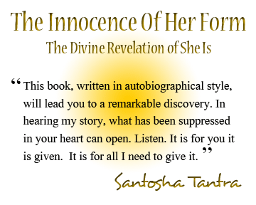

{{header}}
This is the autobiography of a woman Realizer, Santosha Tantra. It clearly
describes the process of Seventh-Stage sadhana and Realization given
by Avatar Adi Da Samraj. It is an inspiration for all and a living
demonstration of Adi Da's Work and Its authenticity.